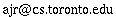

CSC 209:
Software Tools and Systems Programming
University of Toronto Mississauga, Winter 2016
Lecturer:
Alan J Rosenthal

DH 3097D
Lectures:
IB 245, Wednesdays 15:10-17:00, starting January 6.
Last lecture March 30.
No lectures or tutorials (or lecturer office hours) during reading week, February 15 through 19.
Lecturer office hours (during the term):
Wednesdays, 17:10-18:00,
or by appointment.
Lab tutorials (PRA section):
There are five lab tutorial sections, all in DH 2020 but at different days and times. You must sign up for a tutorial on ROSI.
Tutorials start in the week of January 11.
Most tutorials are graded. Please see tutorial information on the course web page.
TUT section:
The TUT 0101 section on Fridays at 17:00 is only to ensure your availability for the midterm on February 26.
There are no CSC 209 classes there in any other week.
Recommended textbooks:
About the C programming language:
A lot of people like K.N. King, C Programming: A Modern Approach, W.W. Norton, 1996 or 2008.
The canonical reference is Kernighan & Ritchie, The C Programming Language, second edition,
Prentice-Hall, 1988.
About unix system programming:
K. Haviland, D. Gray, and B. Salama, Unix System Programming, second edition, Pearson Ed. / Addison-Wesley, 1998.
A book about C is probably more important than a book about unix.
You may not necessarily want to buy the Haviland et al. book (or any book) as it does not cover the entire course.
There is a document about various textbooks on the course web page.
Course topics:
The "software tools" model and unix philosophy,
i/o redirection, a little shell programming,
the unix filesystem,
the C programming language (syntax, datatypes, storage model),
unix processes,
the operating system interface,
interprocess communication and network communication,
introduction to concurrency,
and unix and internet security.
Grading scheme:
| Assignment 1: | 8% | due Friday February 5 (midnight) |
| Assignment 2: | 10% | due Wednesday February 24 |
| Mid-term test: | 14% | 17:10-18:00, Friday February 26, IB 110 |
| Assignment 3: | 10% | due Friday March 18 |
| Assignment 4: | 8% | due Monday April 4 |
| Tutorials: | 10% | Best 10 out of 11 -- attendance required |
| Final exam: | 40% | as scheduled during the April exam period |
To pass the course you must receive at least 35%
(out of a hundred that is) on the final exam.
Assignments are submitted on the computer itself;
you don't hand in any paper.
Submission instructions are included on the assignment handouts.
Late assignments will only be
accepted under exceptional circumstances and with a written explanation
sent separately by e-mail.
To submit an assignment late,
submit it in the usual way and then send the lecturer an
e-mail message or bring him a note.
Any disagreements with the grade assigned to an assignment or the midterm should be submitted to
the lecturer, preferably by e-mail, normally within about a week of its return.
Discussion board
There is a discussion board
at
https://mcs.utm.utoronto.ca/~mybb/utmcs/forumdisplay.php?fid=193
which you are encouraged to use
to communicate with other students in this course.
However, it is not an official part of the course
and we will not necessarily
be reading it; see me or TAs in office hours or send e-mail.
Do not post a test message. Wait until you have something to say, then post that.
Serious academic offence warning!
Your work in this course which is submitted for course credit must be your own.
Representing someone else's creative work as your own is an academic offence.
There are a number of rules which you must follow to avoid prosecution.
Assignments and tutorial (lab) exercises in this course are individual,
so submitting anything which comes from others is an academic offence unless
specifically and precisely acknowledged.
It is also an offence to assist others in committing an academic offence.
Therefore, you may not:
- produce any part of your assignment or tutorial submission while meeting with others
- look at someone else's assignment or tutorial work, completed or partial, before the deadline
- show anyone (other than the instructor or a TA) your assignment or tutorial work, completed or partial, before the deadline
(or any extension they have for special circumstances -- best to wait until after the instructor solutions are posted)
- type assignment or tutorial code into a computer with others
- bring your solution, completed or partial, to any group discussion about an assignment or tutorial
- take away any written or electronic material from any group discussion about an assignment or tutorial
I suggest limiting your collaboration with others to material not to be submitted for course credit,
and asking more-specific assignment or tutorial questions of me or a TA.
Students have been prosecuted and convicted for handing in work written for
hire, written by personal tutors, copied from the web, or with just a bit too
much text borrowed from a friend.
It is not difficult for graders to detect excessive collaboration.